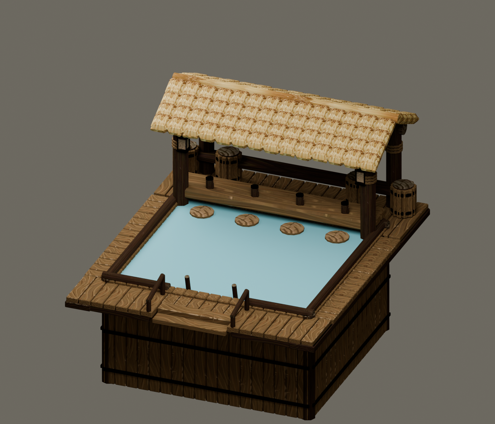
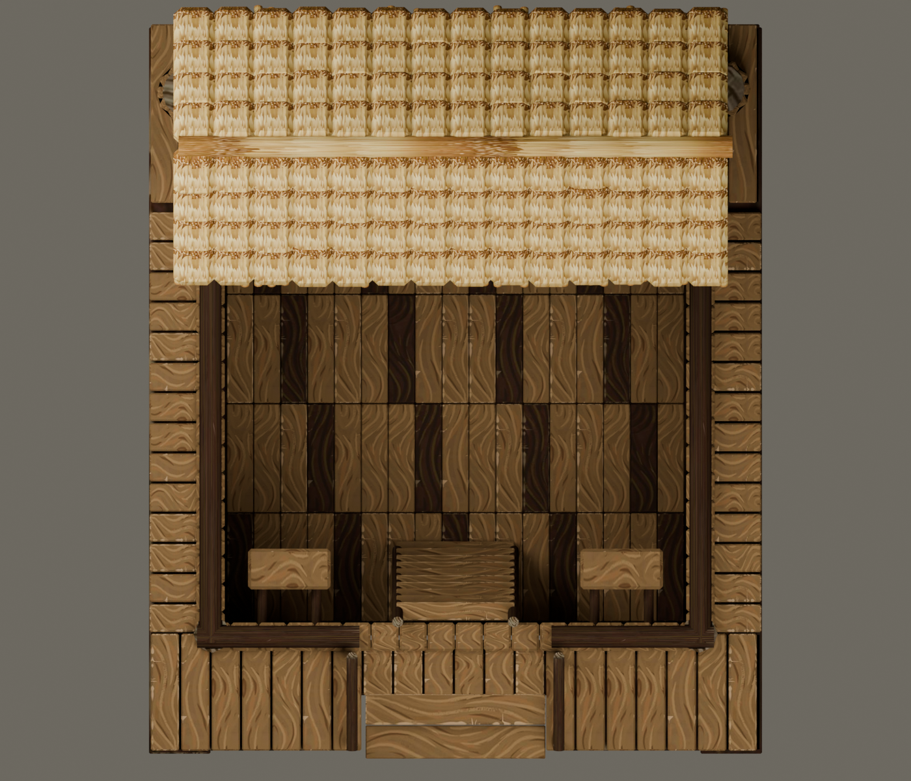

TIMBER, THATCH & A WELL-EARNED BREAK
Leave your worries
on the shore.
A self-contained swim-up pool bar for your beavers. Haul in the water, settle into a seat, and bring your own tail.
Prototype prerelease · Targets Timberborn 1.1.2.4

Offline model and blueprint checks pass. In-game water rendering, underground placement, beaver alignment and save/reload still need verification. Start with a separate test save.
BUILT FOR BEAVERS
A small retreat.
A proper deep end.
A rustic pool recessed two blocks into the ground, with a plank-lined basin, entry ladder and attached bar. Four bar seats and four swimming lanes make room for eight.
Available to Folktails and Iron Teeth under Well-being. When the water runs out, recreation stops until haulers replenish it.
- 5 × 6
- Level ground footprint
- 2 blocks
- Solid soil required below
- 8 guests
- Seats and swimming lanes
- 60 water
- Reserve supplied by haulers

NEW IN v0.2.8
Closer to the colony.
- The game's own lake water in the pool: it darkens with depth, shows the floor and swimmers through the shallows, and ripples and glints like the map's still water.
- Satisfies the native Wet fur need, like the Lido and Swimming Pool.
- Four bar seats and four swimming lanes; no corner sitting.
- Demolition restores the visible ground with scoped cutout cleanup.
- A lower counter aligned to the seating anchors.
- Rebuilt entrance steps with a clear deck opening.
- Native teal fountain water in place of the purple material.
- Dirt and perimeter stakes while under construction.
- A simpler canopy, with the hanging ornament removed.
These are Blender renders. Actual game lighting and water shaders will differ.
WELCOME TO THE POOL
Get it into your colony.
- 01
Download & extract
Close Timberborn. Download the mod ZIP and extract its
TipsyTailfolder intoDocuments/Timberborn/Mods. - 02
Enable the mod
Enable The Tipsy Tail in Mod Manager and restart when prompted. Keep only one version installed.
- 03
Build & supply
Use level ground with two soil layers below and three blocks of clearance above. Connect a path and provide a staffed Hauling Post with access to water.
No Unity editor or extra mod dependency needed. Unlock: 500 science. Build: 60 logs, 40 planks, 10 gears.
Download the mod ZIP ↓Before your first dip.
Does the pool consume river water?
No. Haulers supply the Water resource. The reserve drains at 0.5 per hour (12 per day) while operating, including without visitors. Native paused or blocked building rules pause consumption. The decorative surface stays at a fixed height.
Can I put it on a platform or dig a pit first?
The building requires two solid layers of ground beneath its 5 × 6 footprint. Its native underground-building setup reveals the basin when finished. Platforms and empty pre-dug pits do not qualify.
What if I used an earlier version?
Replace the old mod folder, restart, and reload your save to clear stranded cutouts from removed pools. Keep the included cleanup DLL in the Scripts folder. Test on a separate save. Old placements on thin ground or platforms may need rebuilding. Save migration has not been playtested.
Does it help with wet fur?
Yes. Every visitor, whether seated at the bar or swimming, satisfies the native Wet fur need at 0.5 points per hour, the same rate as the Lido and Swimming Pool. Wet fur relief stops along with recreation while the pool is dry.
Why does the pool water look like the lake?
Because it is drawn with the game's own lake water material and mesh layout, fed by a small private copy of the data the game keeps for map water. The map's water and its simulation are untouched. A water.cfg file in the mod folder can switch back to the older hand-tuned look (legacy) or log the pool's real values, and the presets in the release cover both. Delete the file to go back to the default.
Where can I report a problem?
Open a GitHub issue with your game version, mod version, faction and steps to reproduce. Include a screenshot and relevant log exception, with personal information removed.